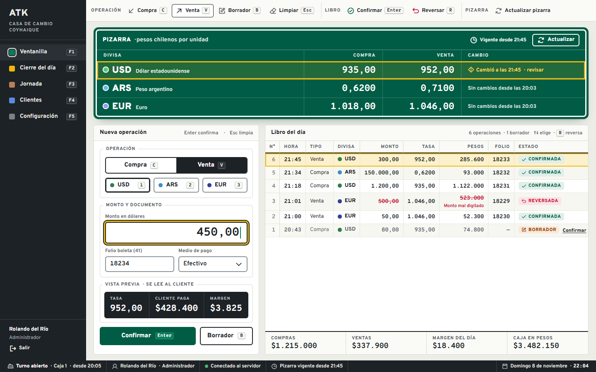
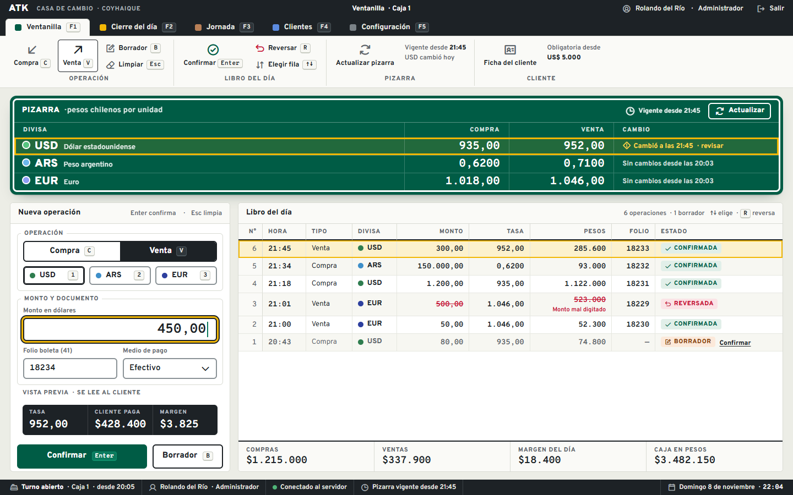
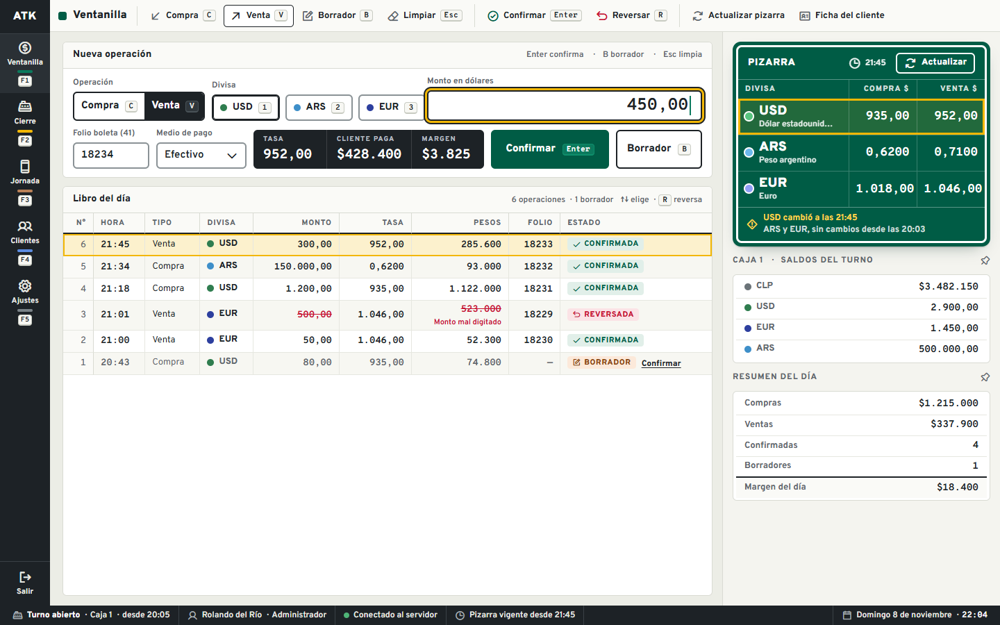
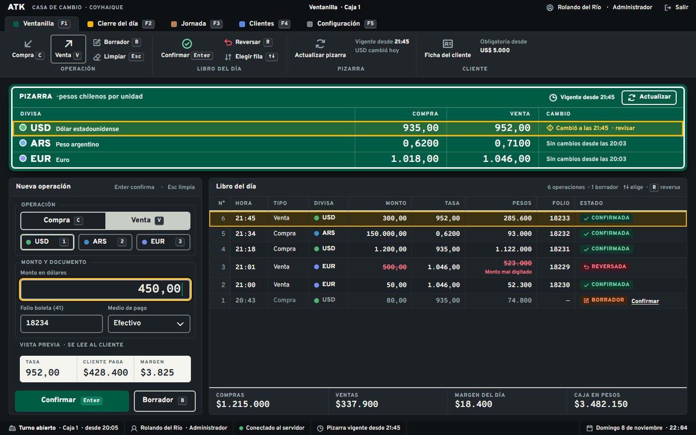
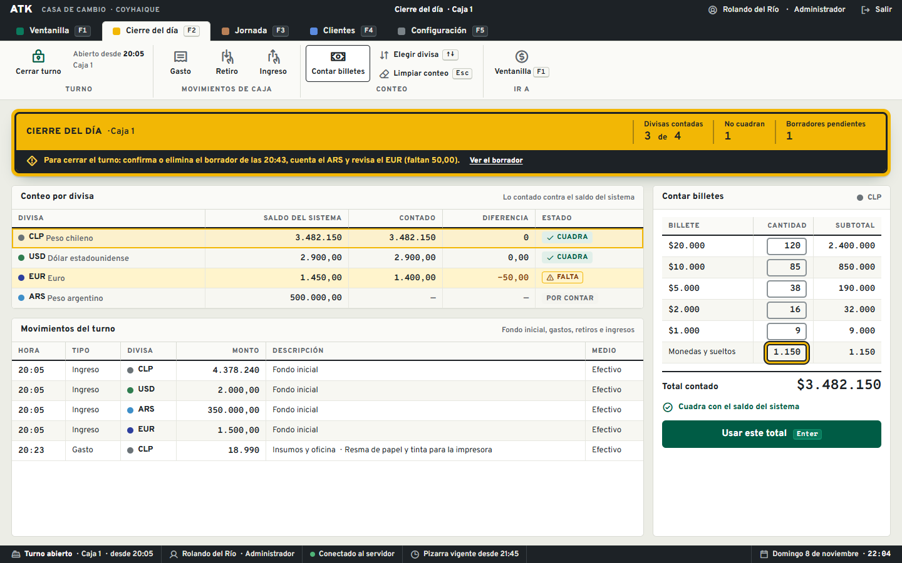

ATK · vuelta 3: profesional tipo Office, con la temática Carretera Austral
Ventanilla a 1440 px con la jornada de demo. La pizarra es una tabla (una fila por divisa), los paneles llevan título y recuadro, el libro es una grilla y abajo va la barra de estado.

A · Riel y barra de comandosEl riel de asfalto de hoy a la izquierda y una barra de comandos de una línea arriba, con los grupos rotulados.

B · Pestañas de cinta (recomendado)Sin riel: las secciones son pestañas con su color y su tecla, y debajo va una cinta con los comandos agrupados y rotulados.

C · Pizarra acoplada a la derechaUn riel compacto, el registro como barra de entrada sobre el libro, y la pizarra, los saldos y el resumen en un panel lateral fijo.

B en oscuroLos letreros conservan su color y los blancos reflejan; la placa se aclara.

Cierre del día en BEl letrero amarillo dice qué falta para cerrar; el conteo y los movimientos son grillas, y el conteo por billete va en un panel.